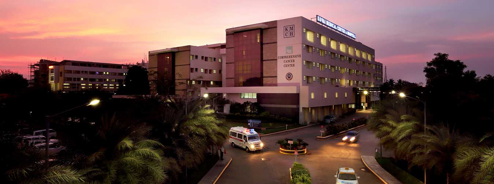
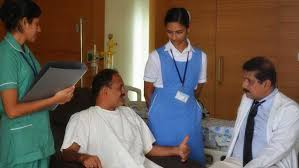

Making the Impossible Possible!
KMCH is the most trusted multispecialty hospital in the southern city of Coimbatore.The relentless service of KMCH in the past 25 years taken health care to the most modern levels in the region catering to urban and rural population...
KMCH - A Health Care Provider of Western Approach with an Indian Touch.
Online proprietary tools provided by web hosting companies.
These are typically intended for users to build their private site.
2)Some companies allow the site owner to install alternative tools (commercial or open source) — the more complex of these may also be described as Content Management Systems.
offline software which runs on a computer, creating pages and which can then publish these pages on any host. (These are often considered to be "website design software", rather than "website builders".)

Click here for more details
Overview
A Health Care Provider of Western Approach with an Indian Touch.
KMCH is the most trusted Multispecialty Hospital in the Southern Indian City of Coimbatore.
The relentless service of KMCH in the past 26 years, taken health care to the most modern levels in the region catering to urban and rural population.
KMCH HAS ESTABLISHED ITS NAME IN MULTIPLE SPECIALTIES SUCH AS ITS:
Heart Institute-
– Bypass operation, heart transplant, valve repair, further more we have…
– The region’s only heart rhythm specialist (Electro physiologist).
– The region’s only established Paediatrics Cardiologist.
Multi Organ Transplant Center-
– Heart & Lung, Liver, Kidney and Bone Marrow.
Comprehensive Cancer Center
–Medical Oncology, Surgical Oncology, Radiation Oncology, Nuclear Medicine & PET.
Interventional Radiology
– A pioneer in the field of IR advocating methods of expertise to institution across the Globe.